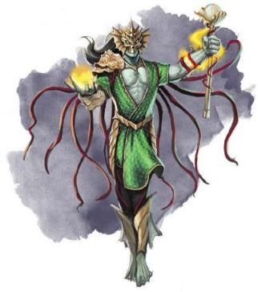

很久以前，艾伦诺西海岸的水域居住着和平的洛卡人鱼locathah。沙·阿贡王国The sahuagin of Sha’argon’s Kingdom的沙华鱼人——永恒主宰Eternal
Dominion的前身——稳步向艾伦诺推进，征服并同化了洛卡人鱼。出于对沙华鱼人明显侵略欲的担忧，血脉双王们采取行动保护艾伦诺周围的水域，建立缓冲区以确保沙·阿贡王国不会构成直接威胁。瓦尔莱亚宗族line
of Valraea被选中，通过不朽评议会的力量，它的贵族们的生理特征变成了海精灵，获得了彩虹色的皮肤和在水下呼吸的能力。
最初，瓦尔莱亚宗族担任保护者和顾问，组织洛卡人鱼并帮助他们建造更强大的防御。然后攻击开始了。冲突慢慢升级；洛卡人鱼人战斗得越激烈，就越能激发沙华鱼人夺取该地区主权的决心。瓦尔莱亚的祭司们动用了不朽评议会的全部力量来对抗袭击者，而沙·阿贡王国无法与他们的超凡力量相匹敌。一代人之后，沙华鱼人回归，而精灵们则进行了报复——利用不朽评议会的神圣力量夺取沙·阿贡边境要塞。 正是在这个时候——当该地区治下包括沙华鱼人和洛卡人鱼的土地时——精灵们正式宣布它为瓦尔莱亚保护国Valraean Protectorate。 根据官方宣告，不朽评议会将保护保护国的所有人民，而瓦尔莱亚一脉将为他们提供指导和安全……所有这些都是一种委婉的说法——人们现在处于艾伦诺统治之下，并被迫接受艾伦诺习俗。虽然做出这一决定的部分原因是为了确保该地的安全，但它也可能与海底龙晶矿床的发现有关——既有已经坠落的西伯瑞斯龙晶，也有可能在其深处存在的凯博尔龙晶。
接下来的千年带来了混乱，因为沙华鱼人——首先是沙·阿贡王国，然后是永恒主宰——继续进攻，而瓦尔莱亚精灵继续通过征服更多的沙华鱼人领土进行报复。但是，不朽评议会的力量拥有地理范围限制。虽然牧师可以借助评议会的力量在世界任何地方施展法术，但能够击退巨龙或击败沙华鱼人军队的超然力量的范围是有限的。当精灵们超越边界时，他们遭受了可怕的损失。然而，永恒主宰无法挑战处于评议会势力范围内的精灵。这导致了一个持续到今天的长期僵局。永恒统治在过去的几个世纪里发动了无数次攻击，以测试不朽评议会的力量，但到目前为止，不朽者的力量已经足以击退每一次沙华鱼人的攻击。
瓦尔莱亚保护国的大部分臣民是洛卡鱼和沙华鱼人； 尽管如此，保护国在很多方面都仿照艾伦诺社会。 在艾伦诺，任何精灵都可以证明自己有资格加入贵族行列。在保护国，臣民同样努力证明自己的价值——但在这种情况下，他们寻求配得上为高贵血统的精灵服务。瓦尔莱恩臣民从小就相信所有的精灵都是神圣的存在。他们古老而睿智，是强大魔法和非凡技能的大师……最重要的是，只有精灵才能被提升入不朽评议会。
瓦尔莱亚宗族的海精灵生活在这种强制奉承之中。他们从出生起就受到偶像化和崇拜，长期以来一直扮演着神圣守护者和向导的角色，以至于许多人开始相信：他们被不朽法庭塑造成海洋的守护者，而他们确实凌驾于他们崇拜的臣民之上。但是，虽然瓦尔莱亚海精灵常常傲慢自大，可他们通常会努力实现这一愿景——保护他们统治的所有臣民，成为他们（大多数）臣民想象中高贵和仁慈的统治者。他们不是暴君；他们力图确保自己人民的安全——但他们不会对权力由海精灵把持、而这些人民最终被困在生活中的事实感到不安。他们认为自己的特权是合乎逻辑且自然的；绝大多数瓦尔莱亚人民也是如此：他们相信精灵拥有漫长的生命和不朽的祖先，比其他生命短暂的凡人更有能力。
与此同时，瓦尔莱亚的臣民相信他们也高于所有外来者——低于精灵，但仍然有幸接受精灵和不朽评议会活着的（或者更确切地说，不朽的）神的指导。大多数臣民都在努力证明自己配得上这种祝福。保护国的所有臣民都接受教育并学习技能。它的人民从事艾伦尼精灵不愿涉足的简单工业，通过劳作为艾伦诺大陆提供重要的龙晶供应。在所有生产中，瓦尔莱恩人通常诚实而勤奋，努力效仿艾伦诺精灵并完善他们的技能——但他们被教导说他们永远不会像精灵一样，因为艾伦诺精灵早期教育的时间就要花费洛卡人鱼的一生。这反映了瓦尔莱恩文化的底色：归根结底，精灵是光荣的，在任何事情上都比你强。 作为一个瓦尔莱恩人，你很幸运能靠近精灵，得到他们的指导和保护。尊重不朽评议会是你的责任，因为没有它，你会在保护国之外的残酷世界中被邪恶的沙华鱼人撕裂。尽管没有非精灵被证明值得加入不朽评议会——他们怎么可能用微不足道的一个世纪彻底完善他们的技能？——但也许，只是也许，如果你继续努力工作并成为最好的人，你可能是第一个。
瓦尔莱亚人民被划分为家族，每个家族都包括多个物种的成员；这在一定程度上削弱了直系亲属的重要性。每个家族都有一位来自不朽评议会的指导者。他们被教导要崇拜这个指导者，并相信他们会亲自保护自己；在某些情况下，这可能是真的，尽管许多不朽评议员并不关心他们的瓦尔莱恩信徒。无论如何，瓦尔莱亚人民对不朽评议会的持续崇拜为评议会本身提供了宝贵的正能量来源。
瓦尔莱亚的时尚在很大程度上反应的艾伦诺风格，尽管使用了不同的材料。精致的皮革代替了布料，而瓦尔莱亚精灵通常比地表亲戚穿得更少。水生材料如珊瑚、象牙、藤蔓等常用作装饰品。和艾伦诺一样，面具是重要的配饰；精灵戴着完整的面具，而有成就的非精灵通常戴着遮住下脸的面具。
保护国的所有臣民都说精灵语。这取代了洛卡人鱼的水族语和沙华鱼人的沙华鱼人语。 那些梦想抵抗的人努力保护他们祖先的语言，但它们不会在精灵能听见的地方被使用。
瓦尔莱亚保护国从艾伦诺海岸开始，延伸大约150里。在这方圆之内，不朽评议会掌握着强大的力量。它可以控制天气并产生其他显著的环境效应。因此，保护国真正是一片福地； 水域平静，天气宜人。保护国包括沿上层水域和海底大陆架的定居点。
保护国与永恒主宰及其前身进行过多次战争。 最终，不朽评议会的超凡力量将敌人拒之门外；且数千年来，保护国在其领土边界上建设并强化了防御工事。一系列骨珊瑚Bone-coral高塔矗立在前方，由符文线连接——刻在海床上的发光图案有助于在需要时集中和引导评议会的力量。该地区包含灵体水雷spirit mines——漂浮的象牙球体，可以将愤怒的幽魂召唤到任何靠得太近的载具上——以及其他防御设施。所有船只都应最好遵循受批准的入境路线。
该地区的明显区域主要与伊瑞安Irian和玛伯尔有关。 然而，有几个显能区域与拉曼尼亚 Lamannia 相关，因此上层水域的很容易出现跨海区的猛烈浪涌。不朽评议会虽然可以遏制住这些暴涨，但这对他们来说是一种能量消耗；因此，瓦尔雷亚人欢迎卡拉卡拉的人鱼merfolk of Karakala，由于他们的仪式能稳定了该区域的风暴。
所有种族的瓦尔莱恩人都遵循与艾伦诺精灵相同的传统。虽然魔法在保护国很普遍，但瓦尔莱亚的臣民没有学到更高等的技术，所以普通魔法的整体水平更接近于五国，而更大的奇迹能瓦尔莱亚的珊瑚宫殿中被看到。保护国的普通民众包括魔匠师和专家，以及少数有天赋的法师。虽然所有臣民都被教导要崇拜不朽评议会，但实际上祭司只有海精灵。
瓦尔莱亚宗族的海精灵施法者通常专注于神圣或奥术魔法。海精灵被鼓励将自己视为神圣的勇士——其中许多确实成为了牧师或圣武士。奥术施法者通常是法师；保护国的强项是预言系、防护系和死灵系法术。该宗族中也有少数奇械师。虽然不朽评议会的力量保卫着该地区，瓦尔莱亚宗族依然维护着许多结界，并监视着海洋中的沙华鱼人活动或任何其他可能的威胁。
保护国的工匠们使用艾伦诺的异域木材，不过他们也使用其他具有异国风情的材料。皮革是制作服装的主要材料，既有用于制作简单时装的精细皮革，也有用于制作盔甲的坚韧皮革。骨珊瑚Bone-coral是一种使用奥术技术人工培育并硬化的珊瑚，被用于从建筑物到装饰品的各种产品；一种水生亚种的艾伦诺活木也被使用，其藤蔓能从和其接触的任何生物中汲取养料（虽然不会以任何方式引起注意），因此即使被塑造成装饰品或盔甲，活木也能保持生命力。
瓦尔莱亚宗族的奇械师们对卡拉萨kar'lassa生物物质的——永恒主宰奥术魔法的基础——感到好奇，并且总是渴望获得它。瓦尔莱恩沙汞鱼人无法使用永恒主宰的魔法培育和炼金技术；结果，他们像其他任何生物一样成长，而不是被引导走特定的道路。这也意味着保护国没有任何二级变种——例如男爵、马林提和沙贡之爪barons, malenti, and Claws of Sha'argon——它们都能在永恒主宰中找到。
瓦尔莱恩保护国是艾伦诺的延伸，与地表国家的外交是由岛屿上的精灵进行的。一般来说，地表居民唯一一次遇到海精灵或瓦尔莱恩人民是在接近艾伦诺的海关检查站；因此，水手们可能对他们很熟悉，但五国的大多数人从未见过海精灵或洛卡人鱼。艾伦诺非常重视沿海水域的安全，船只必须遵守特定的航道——否则可能会遭遇灵体水雷和其他陷阱。
如今，瓦尔莱亚保护国与沙华鱼人的永恒主宰仍处于冰冷的僵局关系；瓦尔莱亚加强了防御，而沙华鱼人统治则努力在保护国内派遣更多的马林提特工。尽管永恒主宰允许艾伦尼船只使用他们的航道（有一定代价），但双方都拒绝与对方进行直接贸易或外交。卡拉卡拉Karakala充当两者之间的中介，传递信息并进行简单的贸易。
瓦尔莱亚宗族的精灵很少离开保护国。他们肩负着重要的职责，而地表世界的事务通常由岛上的精灵处理。 然而，瓦尔莱亚宗族奉献于不朽评议会，冒险者可能会接受来自评议会本身或某个不朽海精灵的直接授权。这样的角色可以是牧师或圣武士，而你很可能对此很骄傲；在你眼中，你是为神圣服务的使者（原文：in your eyes, you’re a celestial in the service of the divine）。
或者你可能是一个质疑保护国传统的海精灵。也许你觉得保护国——以及整个艾伦诺——应该效仿五国的创新精神，而不是仅仅坚持艾伦诺的奥术传统。作为一名奇械师或法师，你可能决心要研究尽可能多的其他魔法体系；你或许不相信保护国的防御会永远坚固，而你想开发一些新东西。
或者，你也可以扮演来自瓦尔莱恩保护国的洛卡人鱼Locathah。洛卡人鱼在科瓦雷几乎无人知晓。作为一名瓦尔莱恩洛卡人鱼，你受益于艾瑞诺的教育，并且可能已经适应了许多精灵习俗。 您是您国家的自豪捍卫者和不朽评议会的忠实仆人吗？或者你因为反对艾伦尼对你的人民的压迫而被流放？如果是后者，你现在的行为是为了瓦尔莱恩洛卡萨的利益吗？ 你想找到一种方法让你的人民拥有自己的不朽者吗？或者你正选择走自己的路，并离开保护国？
瓦尔莱恩保护国是一个隐藏国家的一个孤立的部分。 什么可以把它带入故事中？ 考虑以下想法。
冷战The Cold War。无论是在陆地还是海上，冒险家都可能陷入永恒主宰谋求保护国造成破坏的阴谋。 如果他们不采取任何行动，成千上万的无辜者将会死亡； 他们会做什么？
养鱼场Fish Farm。冒险者们所在的船只偏离了航线（被劫持了？奇怪的自然现象？）并与瓦尔莱亚的防御设施发生冲突，导致船只瘫痪。这些角色被一群在小岛边缘经营农场的瓦尔莱恩洛卡人鱼救了出来。在等待别人救出自己的过程中，冒险家们开始了解这些洛卡人鱼……也许还会发现隐藏在这座小岛上的危险秘密。
人民的不朽Deathless for the People。一些非凡的洛卡人鱼甚至沙华鱼人被作为灵魂偶像spirit idols保存下来，并被普通民众奉为榜样。这就是你可以达到的永生！虽然非精灵能够不朽的希望长期以来一直悬在人们面前，但从未实现过，而且任何精灵都不认为这是可能的。
一群瓦尔莱恩理想主义者——洛卡萨、沙华鱼人和富有同情心的海精灵——决心制造沙华鱼人或洛卡人鱼的不朽者，这是他们在该地区建立平等的第一步。 这些革命者正在寻找与不死创造有关的分散坟墓，以及引导伊瑞安力量的物品。他们的手段是和平的还是暴力的？ 冒险者们会协助他们还是反对他们？
死或生Dead or Alive？为了加强他们在普通民众中的支持，瓦尔莱亚家族宣布一位洛卡人鱼英雄已经被提升到不朽评议会——第一个被接纳的非精灵。但这是真的，还是安抚群众的谎言？ 冒险家们被雇佣来调查，如果这是一个骗局，就揭露它。他们的是被洛卡人鱼抵抗组织的成员赞助，还是可能在不知不觉中为永恒主宰工作？
寻找哈尔瑟拉The Quest for Hal'thela。保护国渴望挖掘卡拉萨kar'lassa的力量和潜力，而最好的目标就是哈尔瑟拉——与塞拉尼斯相关的卡拉萨。 但卡拉萨远在敌后。 冒险家们能帮助找到它的位置并带领团队前往那里吗？为什么沙华鱼人回避它？难道只是他们无法控制反复无常的精类吗？ 或者整个地区都受到了妖精诅咒的影响——在任何人都能安全探索之前必须解除这种诅咒？
边栏：瓦尔莱亚之外的海精灵Sea Elves Beyond Valraea瓦尔莱亚宗族是雷霆海的海精灵，但不是艾伯伦唯一的海精灵。如果你想扮演一个海精灵但不想与保护国高度相关，这里有两个额外的选项供你探索。 玛拉伦Maraen宗族。瓦尔莱亚保护国是雷霆海的守卫，保卫了艾伦诺在雷霆海的国界线。但他们不是艾伦诺唯一的领水边界。在东部海岸，玛拉伦宗族的精灵是龙族前线Dragonreach的哨兵。这不是殖民行为，而是军事行为。在上次龙族入侵之后，瓦尔莱亚被征召为玛拉伦军团服务，但在龙族入侵前线，他们不是臣民，而是平等的士兵。在这里，玛拉伦海精灵与沙华鱼人和洛卡人鱼一起侦察和战斗。他们坚定地坚持艾伦诺的精英原则，并正式将一些非精灵士兵纳入阵线。他们还没有提名一个非精灵进入不朽评议会，但这肯定是他们可能会追求的一条道路。 拉扎尔流亡者。不朽评议会和沃尔宗族之间的冲突震动了艾伦诺。虽然瓦尔莱亚宗族的大多数精灵是不朽评议会的坚定支持者，但在两个海精灵宗主中，都有一些人认为对沃尔的迫害是不公正的，并与选择自己的亲属决裂。在沃尔被击败后，他们和其他支持者一起逃亡，向北流亡到拉扎尔公国。一些人住在法勒恩海岸附近，在那里他们接受了血帆的死灵传统。其余人跟随他们的精灵亲戚来到了欧塞洛斯Orthoss，成为了风语公国的一部分。 |